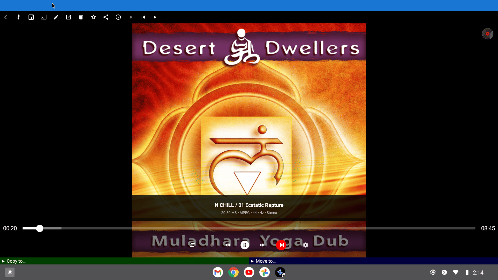
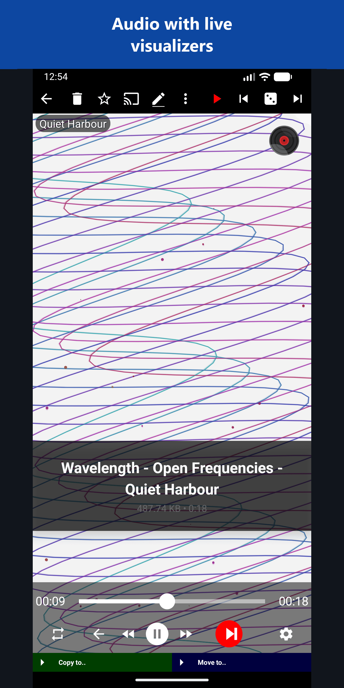

Playing and Organizing Music Files
Play music straight from the folders where it lives - on the phone, a memory card or another computer. The audio player finds missing covers, shows lyrics, casts to a Chromecast and lets you sort tracks while you listen.
Why You'll Love This
Your music does not live in one neat library. Some albums are on the phone, some on a memory card, some on the computer in the next room. FastMediaSorter plays music straight from the folders where it already is - no importing, no library to build - and lets you sort a messy download folder while you listen.
The same audio player finds missing album covers, shows song lyrics, and fills the screen with a calm animation when a track has no picture.
- ✓ FastMediaSorter in the Standard, noLegal, Lite, Legacy, VR or FOSS edition. The Photos edition does not play audio.
- ✓ Music files in any common format: MP3, FLAC, AAC, M4A, OGG, Opus, WMA, WAV, ALAC and more. MIDI files (MID, MIDI) play too.
- ✓ A resource that holds your music - for example the ready-made All Music collection, a folder on this device, or a network folder.
- ✓ For covers and lyrics from the internet: an internet connection.
- ✓ For Chromecast: a Chromecast on the same Wi-Fi network, and any edition except VR and FOSS.
Open a track
Open a resource with music on the main screen and tap a track in the file browser. The audio player opens and starts playing.
The screen shows the album cover, the track name and details such as size, format and sample rate, a progress bar you can drag, and the playback buttons. A small spinning vinyl record in the corner tells you at a glance that music is playing; it stops when you pause.
When the track ends, the player moves on to the next audio file of the same folder. Swipe left or right, or use the next and previous buttons, to skip.

Get missing album covers from the internet
Most music files carry their own cover picture, and the player shows it right away. For files without one, the app can look the cover up online. Go to Settings, the Media tab, section Audio playback, covers and visuals, and turn on Search audio covers online. It is off until you turn it on.
The app then asks three free music catalogs in turn - iTunes, Deezer and the Cover Art Archive - and shows the first good cover it finds. Two more switches appear below: Search only on Wi-Fi (on by default, so no mobile data is used) and Save downloaded media data locally (on by default, so each cover is fetched only once).
Settings, Media tab, Audio section, covers online on, Wi-Fi only and save locally visible.
Pick a background for tracks without a cover
When no cover can be found, the screen does not have to stay empty. In the same settings section tap Visualizer when no cover art and choose one:
- Black background - nothing moves.
- Music note + pulse rings - a music note with rings pulsing around it.
- Breathing bars (15) - soft colored bars rising and falling like an equalizer.
- Wave & Particle Animation - flowing waves with drifting particles.
- Visualization (MP4) - one of several looping video clips. The clips are not part of the app; the first time you choose this, the app offers to download them.
Instead of an animation you can also show your own photos: turn on Show random photos during audio playback, tap Select Photos Source and choose a resource with pictures. A different photo from it appears for each song. See Creating photo slideshows to let the photos change during a song.

Read the lyrics or find the song on YouTube Music
Open the three-dots menu and tap Lyrics. The app searches the internet for the words of the song, using the artist and title stored in the file or its file name, and shows them full screen. Tap the close button to return to the player. The text size follows the Text Settings you use for translations.
To hear another version of the song or explore the artist, tap In YouMusic on the command panel or in the three-dots menu. The YouTube Music app opens with a search for the current track. If YouTube Music is not installed, a short message tells you so.
Audio player with the lyrics overlay open for a well-known track.
Play on a Chromecast
Tap the cast button Cast to.. on the command panel and pick your Chromecast or smart TV from the list. The music plays on it, and the phone becomes the remote control. The same button sends photos, GIFs and videos too; see casting and broadcast.
Files from a network folder or cloud storage are first copied to the phone and then sent to the Chromecast, so the first seconds may take a moment. The phone and the Chromecast must be on the same Wi-Fi network.
Cast route chooser dialog over the audio player, one device listed.
Sort tracks while you listen
A download folder full of unsorted songs is easiest to clean up by ear. While a track plays, tap Copy to.. or Move to.. at the bottom of the player and pick a destination folder - for example "Keep", "Car" or "Delete later". The player continues with the next track, so you can sort a whole folder in one listening session.
How destinations are set up is explained in Copy, move and delete files.
What You Get
Your music plays from wherever it is stored, with covers found automatically, lyrics one tap away, a calm animation or your own photos when there is no cover, and a Chromecast when you want the big speakers. A messy folder gets sorted while you listen.
Tips and Troubleshooting
- A WAV file opened a menu instead of playing? Current versions open WAV files in the audio player directly. Update the app if you still see the menu.
- Covers do not appear? Check that Search audio covers online is on, and that you are on Wi-Fi if Search only on Wi-Fi is on. Very rare recordings may simply not be in the catalogs.
- Cast button missing? The VR and FOSS editions do not include Chromecast support. Also check that Wi-Fi is on.
- Want the music to keep playing after you leave the player? See Playback order, sleep timer and listening in the background.